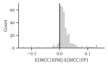

LFA: Latent Forest Allocation
LFA as Factorization
Dictionary Learning
Interaction Degree, not Binary
- “plan” from avrachenkov
Generative Model Specification
 - hierarchical model - marginalize over the root node.
- hierarchical model - marginalize over the root node.
Bayesian Estimation by Gibbs Sampling
Uniform Random Spanning Trees
- Methods for sampling i.e. wilson’s and Duan’s (other? Energy paper?)
- Tree Likelihoods, other facts (edge expectations)
Approximate Forest Samples
comparison with LDA
Simplifying Assumptions (conditional prob IS prob for this)
I.e. the unwritten paper, modifying technique by [1] for RSF instead of RSTs
[1]
L. L. Duan and D. B. Dunson, “Bayesian spanning tree: Estimating the backbone of the dependence graph,” arXiv, arXiv:2106.16120, Jun. 2021. doi: 10.48550/arXiv.2106.16120.
Expected Forest Maximization
Alternating Directions
- estimate laplacian to get \(Q_i\) as shortest path distance
degree normalization
sym laplacian before forest kernel